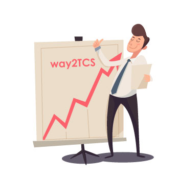
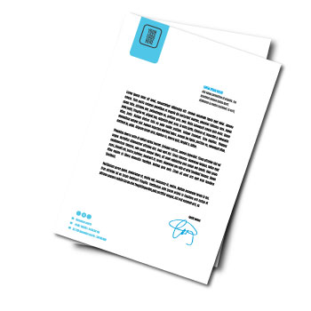

Yes, you heard it correctly! TCS gives a short cut to get on board as early as possible.
For this, they have designed an online course called as ASPIRE. Yup, your guess is correct, you just have to complete this online course with maximum marks; they call it MILEs, only if you wanna join early! This is all going to happen on a TCS' Social Network. They established there own social network, they call it as Campus Commune. This is the place where you are going to spend most of the time in Pre-ILP (Initial Learning Program) process.
Pre-ILP Training

Why the hell this online course?
First of all, by designing this online course they save themselves. Now, no one can say, TCS doesn't offer joining early. They will simply reply, "Solve ASPIRE and get your Joining". And second and main reason is, before directly interacting with corporate world, they want you to be fully prepared for it. You will find some Modules like Business Skills - The Essentials in it. This is the sexiest Module in whole ASPIRE. Really!!!
However, it is mandatory to complete this course. But don't worry if you are unable to complete ASPIRE, they will not throw you out at all. They will simply offer joining at last, generally in next December or January. Yes, you have to wait almost for a year.
Final year students, please don't be in hurry to solve ASPIRE before your final year exam. Appear for your exam first, take a breath, spend some time with Girlfriend/Boyfriend, and then start the ASPIRE. Now control is in your hand, so you can take as much time as you want. You just have to maintain your total Miles below cut-off. (This may not work always, you may receive joining before your expectations!)
I took 4 months, Bade aaram se...then I just reseted whole ASPIRE, just to see what happens! Whola, they still offered me joining!!!
ASPIRE
Let us discuss about ASPIRE. But before that, Where to find Campus Commune?
As I told, your first login will be the final one. You are going to use this account for all activities from beginning to end!
Login to Next Step Portal -> see left hand side menu bar, you will find Campus Commune tab, the Social Network of TCS. It is quite impressive at first glance!
This is where all the things gonna happen. One more important thing, you may not get access to ASPIRE as soon as you receive Offer Letter. It takes some time; few days or a month! Don't get panic!!! visit this regularly, cause you will not receive any mail stating ASPIRE is active. Till then explore all features of new Social Network rather a professional Social Network!
As soon as ASPIRE becomes active, you will be able to see a dashboard on the main page of Campus Commune.
ASPIRE is designed in very flexible manner, to teach you basics of coding and computer step by step. It has many modules, depending on stream/branch.
TCS provides three main streams namely IT, ITIS (IT n Infrastructure), EIS (Engineering and Industrial Services). Do you remember, you have submitted your choices at first tab of your application form. Don't worry, it's not at all in your hand, TCS may assign you any stream depending on business requirement. IT stream will be assigned to most of you and ESI & ITIS will be assigned to the remaining, depending on many factors like your Institute accreditation with TCS.
For example, ASPIRE of IT stream consists of 7 modules, which includes Introduction to computer,Know your TCS, Basics of Programming, Business Skills- The Essential, Problem Solving, Rational DBMS & Python.
You may download all related material in pdf format under Download tab.
Now, Let's understand the marking scheme...
In each Module, there are several chapters and a quiz for each chapter. You have to complete a chapter quiz to unlock the next chapter & all chapters to unlock main Module quiz. In the same manner, you have to complete all the Modules. There is no restriction on sequence, you may choose the modules in random sequence. I'll Suggest you to go for 'Know about TCS' first, since quite easy one and will boost your confidence. And then you may go for 'Buisness Skills Essential' the sexiest Module, and then you may go for any one of your choice, but try to go serially.
Exam/quiz Pattern: Each chapter quiz have 20-40 question with negative marking and cut-offs. You have to score at least 40-50% to clear the quiz and to unlock next chapter. If you fail to do so, you will get another chance. You can clear it in second chance but they will deduct some marks. Yup, too sophisticated system!!! Now, if you are unable to clear that quiz in second attempt then you will loose complete marks of that quiz and next chapter will be unlocked automatically. In this way you have to unlock subsequent chapters one by one to reach upto Module Quiz. Module quiz have more no. of questions and more marks too.
So guys n girls, try to read all the chapters thoroughly and solve quiz carefully. You should have good INTERNET connection for this.

Batching Process...
As you go on solving the Modules, you will earn the Miles. But remember thousands of students are also doing the same. So, to know where you stand among them, ASPIRE have a Leader Board.(You will find this option on Right hand side). Here you can see your ranking in comparison with others and total Miles too.
Here the batching process starts... In each month after the cut-off date, according to leader board, around top 3000 to 4000 students are batched for Training, they call it as ILP (Initial Learning Program). So try to keep your ranking below 3000 to ensure the joining in upcoming batch! Now after first cut-off date, if you don't receive Joining or unable to clear cut-offs Miles. Don't worry... TCS has solution for this; now they will provide a RESET option for each module, so that you can improve your performance/Miles. (What an Idea sir ji!!! Can you see, how TCS keeps students busy and competing with all!!! Great strategy).
This is how, you have to compete with around 15000 students to receive joining before them!!! So keep learning...!
Let me clear, ASPIRE score (Miles) is just to receive early Joining. Then why the hell they ask you to study all Modules? Even if you didn't complete your modules doesn't matter, you will receive Joining at the end but here TCS has a trick; As soon as you Join one of the training centers, on the first day itself TCS will conduct a test called as IRA-1 (Initial Readiness Assessment) on the basis of Complete ASPIRE!!! This test will decide whether you will continue your training or not 😈! Another great strategy!!! So you must read ASPIRE at least to clear IRA-1 (Initial Readiness Assessment). If you fail in IRA-1, you will be rescheduled for next batch, probably next month. Booommmm... TCS is Ruling hard!!!
In the same way, you have to appear for other courses viz. Language Lounge n Tech Lounge same as ASPIRE, but after you receive your Joining! These courses contain the Basics of your training course. This is not mandatory. As I said TCS is ruling hard, they conduct IRA-2 (Initial Readiness Assessment) also. In this test, they examine your proficiency level in particular stream (Sub-domain, like JAVA in IT steam). Don't worry, there is no cut-off for IRA-2. But if you score good, you will be subjected to fast track training, which is of 40 days (around) only. However, normal training duration is 60 days (around).
For Tech-lounge reference material, check Download tab.
- 
-
Dreadful, isn't it?
Wait, just go through the list of Documents and Rules & Regulations in next the stage i.e. ILP (Initial Learning Program). You will just feel terrified.
If you have received your Joining, then Cheers!!! It's time for party!!!
Check next process i.e.ILP (Initial Learning Program)